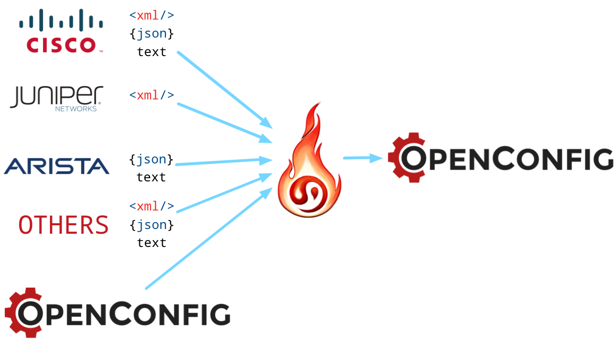
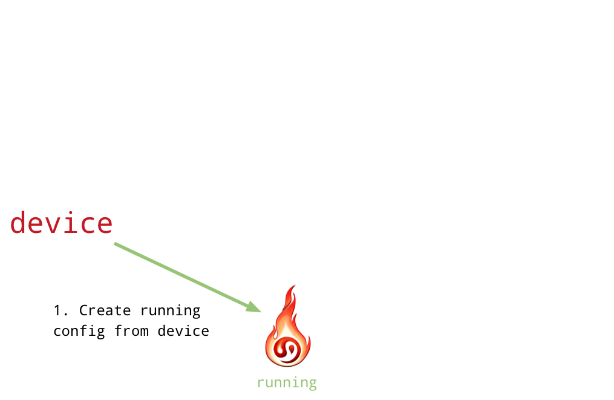
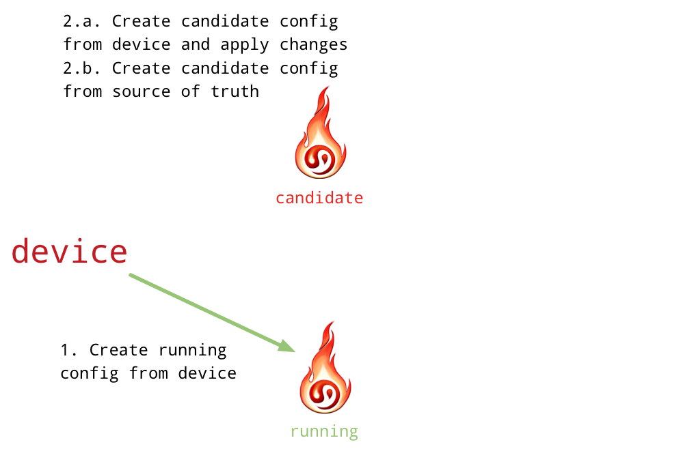
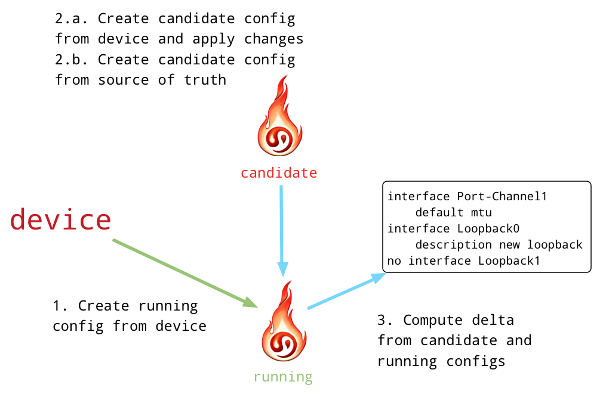
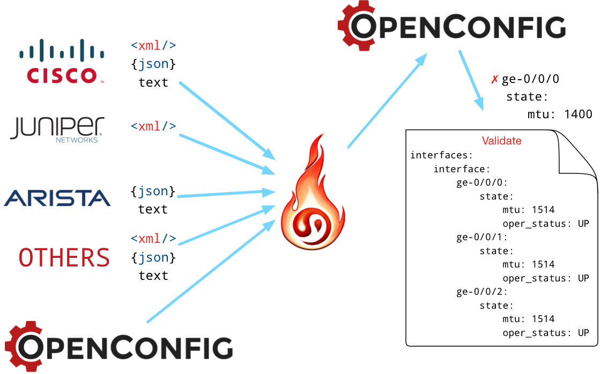

I love the smell of OpenConfig in the morning
David Barroso <dbarrosop@dravetech.com>How to navigate this presentation?
Pressleft and right to change sections. Press up and down to move within sections. Press ? anytime for help.

- Network Systems Engineer at Fastly
- Previously:
- Network Engineer at Spotify
- Network Engineer at NTT
- Network & Systems Engineer at Atlas IT
- Creator of:
Network Automation
So, you want to automate your network...Why is it so painful?
Let's do two experiments...1. Configuring STP portfast
# IOS 12.x
interface X
spanning-tree portfast edge
# IOS 15.x
interface X
spanning-tree portfast
# IOS-XR
interface X
portfast
# Junos
set protocols mstp interface X edge
Two vendors, 4 different ways of doing it
2. Let's parse uptime across different platforms
regex_list = [
# n years, n weeks, n days, n hours, n minutes where each of the fields except minutes
# is optional. Additionally, can be either singular or plural
(r"((?P<years>\d+) year(s)?,\s+)?((?P<weeks>\d+) week(s)?,\s+)?"
r"((?P<days>\d+) day(s)?,\s+)?((?P<hours>\d+) "
r"hour(s)?,\s+)?((?P<minutes>\d+) minute(s)?)"),
# n days, HH:MM:SS where each field is required (except for days)
(r"((?P<days>\d+) day(s)?,\s+)?"
r"((?P<hours>\d+)):((?P<minutes>\d+)):((?P<seconds>\d+))"),
# 7w6d5h4m3s where each field is optional
(r"((?P<weeks>\d+)w)?((?P<days>\d+)d)?((?P<hours>\d+)h)?"
r"((?P<minutes>\d+)m)?((?P<seconds>\d+)s)?"),
]
What is YANG?
RFC6020 - A Data Modeling Language for the Network Configuration Protocol (NETCONF)
Person example
module person {
namespace "https://www.dravetech.com/person";
prefix "person";
container person {
leaf name {
type string;
}
leaf age {
type uint8 {
range "0..100";
}
}
}
}
Highly extensible
module person-address{
namespace "https://www.dravetech.com/address";
prefix "person-address";
import person { prefix person; }
augment "/person:person" {
container address {
leaf street {
type string;
}
leaf city {
type string;
}
leaf country {
type string;
}
}
}
}
$ pyang -f tree person.yang person-address.yang
module: person
+--rw person
+--rw name? string
+--rw age? uint8
+--rw person-address:address
+--rw person-address:street? string
+--rw person-address:city? string
+--rw person-address:country? string
What is OpenConfig?
Vendor-neutral, model-driven network management designed by users http://www.openconfig.net/ tl;dr: bunch of models written inYANG
Model definition (YANG)
grouping interfaces-top {
container interfaces {
list interface {
key "name";
leaf name {
type leafref {
path "../config/name";
}
}
container config {
uses interface-phys-config;
}
container state {
config false;
uses interface-phys-config;
uses interface-common-state;
uses interface-counters-state;
}
uses interface-phys-holdtime-top;
uses subinterfaces-top;
}
}
}
Model Representation
+-- rw interfaces
+-- rw interface* [name]
+-- rw config
| +-- rw description? String
| +-- rw enabled? Boolean
| +-- rw mtu? Uint16
| +-- rw type_ Identityref
| +-- rw name? String
+-- ro state
+-- ro description? String
+-- ro name? String
+-- ro enabled? Boolean
+-- ro oper_status Enumeration
+-- ro mtu? Uint16
+-- ro type_ Identityref
+-- ro admin_status Enumeration
+-- ro ifindex? Uint32
+-- rw counters
+-- rw in_octets? Counter64
+-- rw in_discards? Counter64
+-- rw last_clear? DateAndTime
Why should you care about OpenConfig?
- Defines RPC service to interact with devices
- Replaces configuration commands and state with data
- Common data models regardless of vendor
When can I have it?
NAPALM
Network Automation and Programmability Abstraction Layer with Multi-vendor support- Python library
- Support for multiple NOS
IOS-XE, IOS-XR, NXOS, EOS, JunOSand many others - Provides common API
- Abstracts operations
- Normalizes data
- Uses already available mechanisms
NETCONF, REST APIs, ssh screen scraping...
napalm-yang
 I love the smell of
I love the smell of OpenConfig in the morning
Native to OpenConfig
IOS
(...)
interface GigabitEthernet2.1
description another subiface
platform ring rx 512
platform ring tx 256
encapsulation dot1Q 1 native
ip address 172.20.0.1 255.255.255.0 secondary
ip address 192.168.1.1 255.255.255.0
ip redirects
ip unreachables
(...)
Junos
<configuration>
<interfaces>
(...)
<interface>
<name>ae0</name>
<vlan-tagging/>
<unit>
<name>0</name>
<description>ASDASDASD</description>
<vlan-id>100</vlan-id>
<family>
<inet>
<address>
<name>192.168.100.1/24</name>
</address>
<address>
<name>172.20.100.1/24</name>
</address>
</inet>
</family>
</unit>
</interface>
(...)
</interfaces>
</configuration>
OpenConfig
{
"interfaces": {
"interface": {
(...),
"GigabitEthernet2": {
(...),
"subinterfaces": {
"subinterface": {
"1": {
"config": {
"description": "another subiface",
"enabled": true,
"name": "GigabitEthernet2.1"
},
"index": "1",
"ipv4": {
"addresses": {
"address": {
"172.20.0.1": {
"config": {
"ip": "172.20.0.1",
"prefix-length": 24,
"secondary": true
},
"ip": "172.20.0.1"
},
"192.168.1.1": {
"config": {
"ip": "192.168.1.1",
"prefix-length": 24,
"secondary": false
},
"ip": "192.168.1.1"
}
}
},
"config": {
"enabled": true
}
},
"vlan": {
"config": {
"vlan-id": 1
}
}
},
(...)
}
}
}
OpenConfig to Native

OpenConfig
{
"interfaces": {
"interface": {
(...),
"GigabitEthernet2": {
(...),
"subinterfaces": {
"subinterface": {
"1": {
"config": {
"description": "another subiface",
"enabled": true,
"name": "GigabitEthernet2.1"
},
"index": "1",
"ipv4": {
"addresses": {
"address": {
"172.20.0.1": {
"config": {
"ip": "172.20.0.1",
"prefix-length": 24,
"secondary": true
},
"ip": "172.20.0.1"
},
"192.168.1.1": {
"config": {
"ip": "192.168.1.1",
"prefix-length": 24,
"secondary": false
},
"ip": "192.168.1.1"
}
}
},
"config": {
"enabled": true
}
},
"vlan": {
"config": {
"vlan-id": 1
}
}
},
(...)
}
}
}
IOS
(...)
interface GigabitEthernet2.1
description another subiface
platform ring rx 512
platform ring tx 256
encapsulation dot1Q 1 native
ip address 172.20.0.1 255.255.255.0 secondary
ip address 192.168.1.1 255.255.255.0
ip redirects
ip unreachables
(...)
Junos
<configuration>
<interfaces>
(...)
<interface>
<name>ae0</name>
<vlan-tagging/>
<unit>
<name>0</name>
<description>ASDASDASD</description>
<vlan-id>100</vlan-id>
<family>
<inet>
<address>
<name>192.168.100.1/24</name>
</address>
<address>
<name>172.20.100.1/24</name>
</address>
</inet>
</family>
</unit>
</interface>
(...)
</interfaces>
</configuration>
Object-aware
Object-aware
Object-aware
napalm-yang diff
>>> print(napalm_yang.utils.diff(candidate,
... running))
{
"interfaces": {
"interface": {
"both": {
"Port-Channel1": {
"config": {
"mtu": {
"first": "0",
"second": "9000"
}
}
}
},
"first_only": [
"Loopback0"
],
"second_only": [
"Loopback1"
]
}
}
}
EOS Configuration Merge
>>> config = candidate.translate_config(
... profile=eos_device.profile,
... merge=running)
>>> print(config)
interface Port-Channel1
default mtu
interface Loopback0
description new loopback
no interface Loopback1
Compliance Reports
Device profiles
IOS
interfaces:
interface:
_process:
mode: block
regexp: "(?P<block>interface (?P<key>(\\w|-)*\\d+)\n(?:.|\n)*?^!$)"
config:
enabled:
_process:
mode: is_present
regexp: "(?P<value>no shutdown)"
description:
_process:
mode: search
regexp: "description (?P<value>.*)"
mtu:
_process:
mode: search
regexp: "mtu (?P<value>[0-9]+)"
Junos
interfaces:
interface:
_process:
mode: xpath
xpath: "interfaces/interface"
key: name
config:
enabled:
_process:
mode: is_absent
xpath: "disable"
description:
_process:
mode: xpath
xpath: description
mtu:
_process:
mode: xpath
xpath: mtu
napalm-ansible
- napalm_parse_yang - Parses configuration/state from a device or file
- napalm_diff_yang - Allows you to diff two YANG objects
- napalm_translate_yang - Translates a YANG object into native configuration
salt integration will come soon...
Summary
- Automation is hard because:
- Different vendors have different CLIs
- Different vendors return same data in different formats
- Vendors are inconsistent
- Different vendors have different programming interfaces
- YANG tries to address the consistency problem
- OpenConfig/IETF models try to address the first two problems
NAPALM:- Presents a common programming interface across different vendors
- Brings YANG models support to models not yet supported by vendors or where there is no support for them at all
- Lets you build deltas for devices without that capability built-in
- Allows you to easily validate state/config
- Integrates easily with existing tooling; ansible, salt, trigger, stackstorm, homegrown...